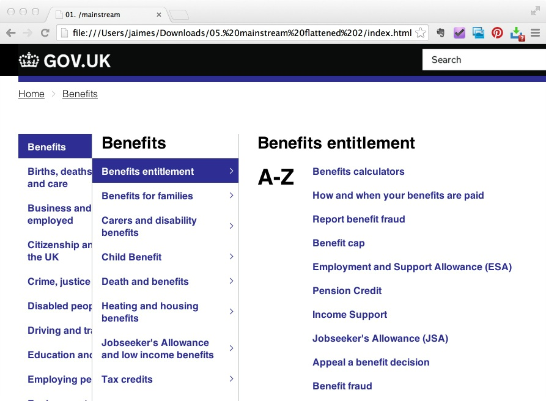

Mainstream browse
Product manager: Ben Andrews
User needs
As a user who doesn't really know what I need on a topic, I need suggestions of potentially relevant items
As a user who doesn't know a topic or area well, I need a structured list of topics and sub-topics so that I can get a mental map of the domain
Insights
Current product suits collecting resources
The current mainstream browse page provides more contextual information and is best suited to knowledge-hungry users who are uncertain what they're looking for and want to collect any relevant content.
It's also better for less confident users who find 'page->click->page' interactions easier to understand.
Prototype suits quickly task finding
The prototype suits task-focused users who have a good idea what they're looking for and need to find a single item as quickly as possible.
Prototype exposes Information Architecture issues
The prototype works best for users who already have knowledge of the domain as they must find their item with the minimum of contextual information, and potentially in a long alphabetical list.
Design
Current product - Page per tier Prototype - 1 page